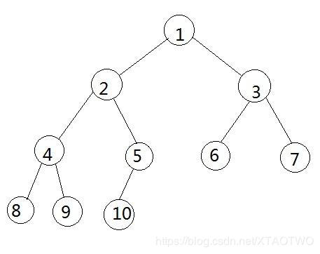
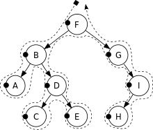
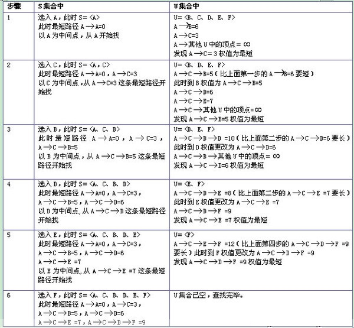
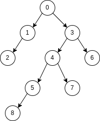
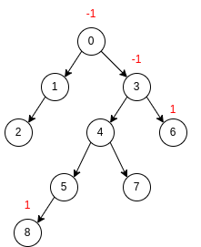
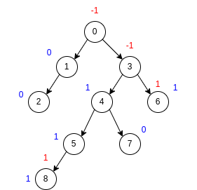
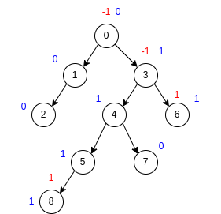
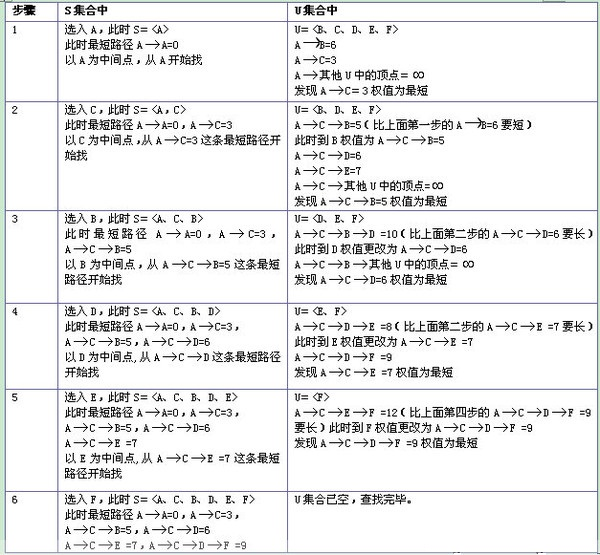
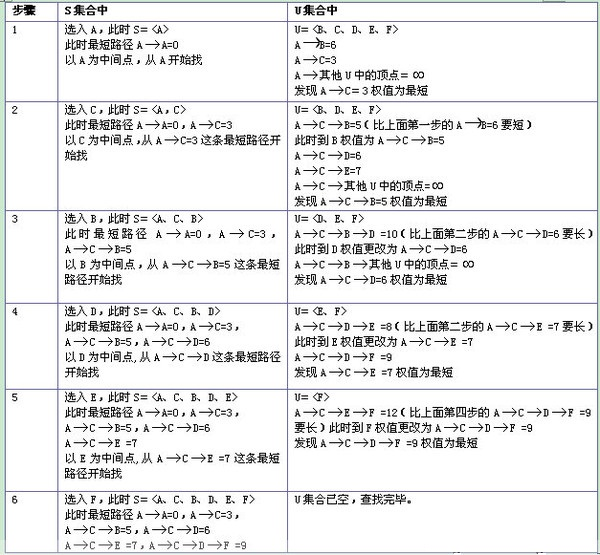

前言 一、数学知识复习 对数 定理 1.1 $$ log_A{B} = \frac{log_C{B}}{log_C{A}} ; C > 0 $$
级数 几何级数公式 $$ \sum_{i = 0}^{N}2^i = 2^{N+1} - 1 $$
$$ \sum_{i = 0}^{N}A^i = \frac{A^{N+1} - 1}{A - 1} $$
当N趋于$\infty$时，该和趋于$\frac{1}{1-A}$。
二、算法分析 1. 数学基础 1.1. 四个定义 如果存在正常数 $c$ 和 $n_0$ 使得当 $N \geq n_0$ 时 $T(N) \leq cf(N)$ ，则即为 $T(N) = O(f(N))$ 。 如果存在正常数 $c$ 和 $n_0$ 使得当 $N \geq n_0$ 时 $T(N) \geq cg(N)$ ，则即为 $T(N) = \Omega(f(N))$ 。 $T(N) = \Theta (h(N))$ 当且仅当 $T(N) = O(h(N))$ 且 $T(N) = \Omega(h(N))$ 。 如果 $T(N) = O(p(N))$ 且 $T(N) \neq \Theta(p(N))$ ，则 $T(N) = o(p(N))$ 2. 排列组合 2.1. 公式记录 $$ A_n^m = \frac{n!}{(n-m)!} $$
n个不同元素取m个，不关心顺序。为组合，使用C表示 $$ C_n^m = \frac{A_n^m}{m!} = \frac{n!}{m!(n-m)!} $$
3. 质数 使用欧拉线性筛计算出来的 $10^n$ 以内的质数的数量
1 2 3 4 5 6 7 8 10 4 100 25 1000 168 10000 1229 100000 9592 1000000 78498 10000000 664579 100000000 5761455
3.1. 埃氏筛 埃氏筛是将一个合数分成一个质数乘以一个整数，那么循环所有的数，将他们乘以小于自己的质数，得到的结果一定不是质数 那么循环到某个数时，如果其没有被小于自己的数排掉，那么一定是质数 证明 反证法，如果有一个合数x没有被排掉，可以分为 $x = a \times b，a为因数中最小的质数$ b为合数一定大于a，因为b也可以分为质因数相乘，a为其中最小的；b为质数同样大于a 在循环到b时，乘以小于自己的所有质数，到a时一定会把x排除掉，假设不成立，证明是可行的 3.2. 欧拉线性筛：使用O(n)的时间复杂度找出n以内的所有质数 核心思想是埃氏筛，但是使用一个提前退出将时间复杂度降到O(n) 当一个合数 $x = a \times b$，其中b为a的倍数，a为质数，遍历到x时提前退出的唯一顾虑是 $n = x \times c = a \times b \times c，c为质数$ 没有做排除 当遍历到 $b \times c$ 时，会将n进行排除，所以此顾虑消失，提前退出减少循环计算次数 1 2 3 4 5 6 7 8 9 10 11 12 13 14 15 16 17 18 19 20 21 22 23 24 25 26 27 28 29 30 31 32 33 const mx int = 1e8 var primes []int = make ([]int , 0 , 5 *1e7 )func main () flag := make ([]bool , mx+1 ) check := 10 for i := 2 ; i < mx+1 ; i++ { if !flag[i] { primes = append (primes, i) } for _, v := range primes { if i*v > mx { break } flag[i*v] = true if i%v == 0 { break } } if i == check { fmt.Println(i, len (primes)) check *= 10 } } }
三、数据结构 1. 树 1.1. 公共部分 1) 遍历 (1) 树的深度优先和广度优先遍历 定义树结构

深度优先遍历 深度优先遍历（Depth First Search），简称DFS，其原则是，沿着一条路径一直找到最深的那个节点，当没有子节点的时候，返回上一级节点，寻找其另外的子节点，继续向下遍历，没有就向上返回一级，直到所有的节点都被遍历到，每个节点只能访问一次。
算法步骤：
使用栈的数据结构实现
首先将根节点1压入栈中【1】 将1节点弹出，找到1的两个子节点3，2，首先压入3节点，再压入2节点（后压入左节点的话，会先取出左节点，这样就保证了先遍历左节点），2节点再栈的顶部，最先出来【2，3】 弹出2节点，将2节点的两个子节点5，4压入【4，5，3】 弹出4节点，将4的子节点9，8压入【8，9，5，3】 弹出8，8没有子节点，不压入【9，5，3】 弹出9，9没有子节点，不压入【5，3】 弹出5，5有一个节点，压入10，【10，3】 弹出10，10没有节点，不压入【3】 弹出3，压入3的子节点7，6【6，7】 弹出6，没有子节点【7】 弹出7，没有子节点，栈为空【】，算法结束 出栈顺序【1，2，4，8，9，5，10，3，6，7】
1 2 3 4 5 6 7 8 9 10 11 12 13 14 15 16 17 18 19 20 21 22 23 24 25 26 27 #include <stack> #include <memory> #include <vector> typedef struct Node { int value; vector<shared_ptr<Node>> pChild; weak_ptr<Node> pParent; } Node; void printNodesDeepFirst (const shared_ptr<Node> &node) stack<shared_ptr<Node>> myStack; myStack.push (node); while (myStack.size () > 0 ) { shared_ptr<Node> pTmp = myStack.top (); myStack.pop (); PRINT ("%d " , pTmp->value); for (int i = pTmp->pChild.size (); i != 0 ; --i) { myStack.push (pTmp->pChild[i - 1 ]); } } PRINT ("\r\n" ); }
广度优先遍历 广度优先遍历（Breadth First Search），简称BFS；广度优先遍历的原则就是对每一层的节点依次访问，一层访问结束后，进入下一层，直到最后一个节点，同样的，每个节点都只访问一次。
算法步骤：
使用队列的数据结构实现
节点1，插入队列【1】 取出节点1，插入1的子节点2，3 ，节点2在队列的前端【2，3】 取出节点2，插入2的子节点4，5，节点3在队列的最前端【3，4，5】 取出节点3，插入3的子节点6，7，节点4在队列的最前端【4，5，6，7】 取出节点4，插入3的子节点8，9，节点5在队列的最前端【5，6，7，8，9】 取出节点5，插入5的子节点10，节点6在队列的最前端【6，7，8，9，10】 取出节点6，没有子节点，不插入，节点7在队列的最前端【7，8，9，10】 取出节点7，没有子节点，不插入，节点8在队列的最前端【8，9，10】 取出节点8，没有子节点，不插入，节点9在队列的最前端【9，10】 取出节点9，没有子节点，不插入，节点10在队列的最前端【10】 取出节点10，队列为空，算法结束 我们看一下节点出队的顺序【1，2，3，4，5，6，7，8，9，10】
1 2 3 4 5 6 7 8 9 10 11 12 13 14 15 16 17 18 19 20 21 22 23 24 25 26 #include <queue> #include <memory> #include <vector> typedef struct Node { int value; vector<shared_ptr<Node>> pChild; weak_ptr<Node> pParent; } Node; void printNodesWidthFirst (const shared_ptr<Node> &node) queue<shared_ptr<Node>> myQueue; myQueue.push (node); while (myQueue.size () > 0 ) { shared_ptr<Node> pTmp = myQueue.front (); myQueue.pop (); PRINT ("%d " , pTmp->value); for (auto tmp : pTmp->pChild) { myQueue.push (tmp); } } PRINT ("\r\n" ); }
2) 度 孩子结点个数就是结点的度，0度就是没有孩子结点 树的度就是结点中最大的度 1.2. 二叉树 1) 性质和算法 (1) 二叉树前中后序遍历 
1 2 3 4 5 6 7 void in_order_traversal (TreeNode *root) if (root->lchild != NULL ) in_order_traversal (root->lchild); if (root->rchild != NULL ) in_order_traversal (root->rchild); }
中序遍历指先访问左（右）子树，然后访问根，最后访问右（左）子树的遍历方式 1 2 3 4 5 6 7 void in_order_traversal (TreeNode *root) if (root->lchild != NULL ) in_order_traversal (root->lchild); if (root->rchild != NULL ) in_order_traversal (root->rchild); }
1 2 3 4 5 6 7 void in_order_traversal (TreeNode *root) if (root->lchild != NULL ) in_order_traversal (root->lchild); if (root->rchild != NULL ) in_order_traversal (root->rchild); }
(2) 完全二叉树和满二叉树 满二叉树，只有最后一行是叶子节点，其他的节点都是度为2的节点 完全二叉树指的是除了最后一行，整体是满二叉树，最后一行叶子节点从左到右依次排列 2) 二叉搜索树 二叉查找树（Binary Search Tree），（又：二叉搜索树，二叉排序树）它或者是一棵空树，或者是具有下列性质的二叉树：若它的左子树不空，则左子树上所有结点的值均小于它的根结点的值； 若它的右子树不空，则右子树上所有结点的值均大于它的根结点的值；
性质 二叉排序树的查找过程和次优二叉树类似，通常采取二叉链表作为二叉排序树的存储结构。中序遍历 二叉排序树可得到一个关键字的有序序列，一个无序序列可以通过构造一棵二叉排序树变成一个有序序列，构造树的过程即为对无序序列进行排序的过程。每次插入的新的结点都是二叉排序树上新的叶子结点，在进行插入操作时，不必移动其它结点，只需改动某个结点的指针，由空变为非空即可。搜索,插入,删除的复杂度等于树高，O(log(n)).
3) 大（小）根堆（优先队列） 大（小）根堆是堆的两种形式之一。根结点（亦称为堆顶）的关键字是堆里所有结点关键字中最大（小）者，称为大（小）根堆，又称最大（小）堆、大（小）顶堆。大（小）根堆要求根节点的关键字既大（小）于或等于左子树的关键字值，又大（小）于或等于右子树的关键字值。
性质和应用 4) 红黑树 参考 红黑树(R-B tree)原理图文详解
(1) 红黑树的特性和应用 红黑树的查找和插入时间复杂度都是 $O(\log n)$，相比hash表更加稳定 应用
std::map和std::set使用的是红黑树 epoll的底层实现是用红黑树组织fd 1.3. 线段树 用于求区间值的一种数据结构
1) 原理 线段树是一个平衡二叉树，母节点代表整个区间的和，越向下区间越小。对于一个数组[1, 2, 3, 4, 5]，构建线段树如下
某个节点对应线段为[a, b]，设 $mid = \frac{l+r}{2}$ 向下取整，两个子节点对应线段是[a, mid]和[mid+1, b]，左区间数量比右区间数量相等或多一个
2) 示例1 区间和的个数 题目
给你一个整数数组 nums 以及两个整数 lower 和 upper 。求数组中，值位于范围 [lower, upper] （包含 lower 和 upper）之内的 区间和的个数 。
区间和 S(i, j) 表示在 nums 中，位置从 i 到 j 的元素之和，包含 i 和 j (i ≤ j)。
2. hashTable 哈希表 2.1. 为什么哈希表的除数要用素数 参考自 腾讯面试真题：证明为什么哈希表除m取余法的被除数为什么用素数比较好
使用合数可能和等差数列的差值含有公因数，导致碰撞概率增大 1) 假设 传入的key是等差数列: 首项1，差值从2到5，长度10 两个hash表，一个使用6取模，一个使用7取模 2) 效果 差值2
余数 0 1 2 3 4 5 首次 1 3 5 碰撞 7 9 11 碰撞 13 15 17 碰撞 19
余数 0 1 2 3 4 5 6 首次 7 1 9 3 11 5 13 碰撞 15 17 19
差值3
余数 0 1 2 3 4 5 首次 1 4 碰撞 7 10 碰撞 13 16 碰撞 19 22 碰撞 25 28
余数 0 1 2 3 4 5 6 首次 7 1 16 10 4 19 13 碰撞 28 22 25
差值4
余数 0 1 2 3 4 5 首次 1 9 5 碰撞 13 21 17 碰撞 25 33 29 碰撞 37
余数 0 1 2 3 4 5 6 首次 21 1 9 17 25 5 13 碰撞 29 37 33
差值5
余数 0 1 2 3 4 5 首次 6 1 26 21 16 11 碰撞 36 31 46 41
余数 0 1 2 3 4 5 6 首次 21 1 16 31 11 26 6 碰撞 36 46 41
3) 结论 如果差值和被除数之间不含有公因数，效果一样 如果含有公因数，碰撞概率会变高 3. bitmap 位图 3.1. 原理 代表2和31都在集合中 按照在二进制中的位置表示对应的数字 使用数组可以将一个很大的内存区域集合在一起，根据对应的位置说明对应的数字 3.2. 举例 1) 实现 11位qq号最大99999999999，也就是需要 $1 \times 10^{12}$ 个bit保存 计算成int数组 $1 \times 10^{12} / 32 = 31250000000$ 1 2 3 4 5 6 7 8 9 10 11 12 13 14 15 16 17 #define MAX_QQ_NUMBER 99999999ll const long BITS_PER_LONG = 8 * sizeof (long );long qq_bitmap[MAX_QQ_NUMBER / BITS_PER_LONG + 1 ] = {0 };void set_qq_bitmap (long long qq) if (qq > MAX_QQ_NUMBER) return ; qq_bitmap[qq / BITS_PER_LONG] |= (1 << (qq % BITS_PER_LONG)); } long check_qq_bitmap (long long qq) if (qq > MAX_QQ_NUMBER) return 0 ; return qq_bitmap[qq / BITS_PER_LONG] & (1 << (qq % BITS_PER_LONG)); }
4. ST 稀疏表 4.1. 原理 本身是解决区间问题，也就是给一个序列，找到a-b之间的最大值（或者其他值）为x的有几组 这种题目暴力解决，需要先计算所有两个点之间的最大值存到一个 $n \times n$ 的表里面，然后遍历表进行统计，空间复杂度和时间复杂度太高 使用稀疏表可以使用比较少的空间并节省大量的计算，用到的矩阵大小是 $n \times log_2 n$ 首次对数据进行预处理形成一个稀疏表后，可以直接进行 $O(1)$ 的查询 整理成的矩阵的每个元素代表（拿取最大值表示） $$
想要取a到b之间的结果，那么取 $s = log_2(b-a+1)$ $$
其中 $a + 2^{s}-1 = a + (b - a + 1) - 1 = b \ge a = b - (b - a + 1) + 1 = b - 2^{s} + 1$ 5. 并查集 5.1. 原理 找关系，给一系列点，给出一些点和点的关系。然后找出某两个点是否有关系 单一一个可以直接使用bfs解就好了，如果空间不足，使用并查集可以做到 $O(n)$ 的空间复杂度 首先将所有点初始化关系只有自己和自己 然后遍历一边关系列表，将点和点连接起来，找到公共的父级 查找时就是看是否两个点存在公共父级 5.2. 实现 主要实现两个方法，查找和插入 由于查找要用递归，想要减少递归深度，每次查找，整条链上的所有节点的父级都要指向最终点，这样下次只有一级查找 1 2 3 4 5 6 7 8 9 10 11 12 13 14 15 16 17 18 19 20 21 22 23 24 25 26 27 28 type unionFind []int func initUnionFind (n int ) u := make (unionFind, n) for i := range u { u[i] = i } return u } func (u unionFind) int ) int { ap := u[a] for ap != u[ap] { ap = u[ap] } for a != ap { u[a], a = ap, u[a] } return ap } func (u unionFind) int ) { u[u.find(b)] = u.find(a) }
1 2 3 4 5 6 7 8 9 10 11 12 13 14 15 16 17 18 19 20 21 22 23 func test () uf := make ([]int , n) for i := range uf { uf[i] = i } find := func (x int ) int { ap := uf[x] for ap != uf[ap] { ap = uf[ap] } for x != ap { uf[x], x = ap, uf[x] } return ap } merge := func (a, b int ) uf[find(a)] = find(b) } }
四、算法 1. 排序算法 时间复杂度总结 定理 $N$个互异数的数组的平均逆序数是 $N(N-1)/4$ 。 通过交换相邻元素进行排序的任何算法平均需要 $\Omega(N^2)$ 时间。 1.1. 插入排序 原理 自我理解像扑克牌起牌一样，一张一张插入到已有的序列中 1 2 3 4 5 6 7 8 9 10 11 12 13 14 15 16 17 18 template <typename T>void insertionSort (T *data, int length, bool order = true ) T tmp = 0 ; for (int i = 1 ; i < length; ++i) { tmp = data[i]; int j = 0 ; for (j = i; j > 0 && ((data[j - 1 ] > tmp) ^ !order); --j) { data[j] = data[j - 1 ]; } data[j] = tmp; } }
1.2. 希尔排序 1 2 3 4 5 6 7 8 9 10 11 12 13 14 15 16 17 18 19 20 template <typename T>void shellSort (T *data, int length, bool order = true ) T tmp = 0 ; for (int increment = length / 2 ; increment > 0 ; increment /= 2 ) { for (int i = increment; i < length; ++i) { tmp = data[i]; int j = 0 ; for (j = i; j >= increment && ((data[j - increment] > tmp) ^ !order); j -= increment) { data[j] = data[j - increment]; } data[j] = tmp; } } }
定理 使用希尔增量时希尔排序的最坏情形的运行时间为 $\Theta(N^2)$ 。 使用Hibbard增量的希尔排序的最坏情形运行时间为 $\Theta(N^{\frac{3}{2}})$ 1.3. 堆排序 大根堆或小根堆，保证父节点一定大于（小于）子节点，头节点为最大（最小）的 1.4. 快速排序（分治思想） 选定一个中轴数，将数组分为大于和小于的部分，中轴放中间 对大于部分和小于部分分别做同样的事 2. 最短路径算法 Dijkstra(迪杰斯特拉)算法 Dijkstra(迪杰斯特拉)算法是典型的单源最短路径算法，用于计算一个节点到某个节点的最短路径。主要特点是以起始点为中心向外层层扩展，直到扩展到终点为止。
算法描述 
1 2 3 4 5 6 7 8 9 10 11 12 13 14 15 16 17 18 19 20 21 22 23 24 25 26 27 28 29 30 31 32 33 34 35 36 37 38 39 40 41 42 43 44 45 46 47 48 49 50 51 52 53 54 55 56 57 58 59 60 61 62 63 64 65 66 67 68 69 70 71 72 73 74 75 76 77 78 79 80 81 82 83 type pointS struct { ch byte step int } type littleQueue []pointSfunc (q *littleQueue) interface {}) { *q = append (*q, v.(pointS)) } func (q *littleQueue) interface {} { x := (*q)[len (*q)-1 ] *q = (*q)[:len (*q)-1 ] return x } func (q *littleQueue) int { return len (*q) }func (q *littleQueue) int ) bool { return (*q)[i].step < (*q)[j].step }func (q *littleQueue) int ) { (*q)[i], (*q)[j] = (*q)[j], (*q)[i] }func dijkstra (src byte , dst byte , distMaps map [byte ]map [byte ]int ) int { pq := make (littleQueue, 1 ) pq[0 ] = pointS{src, 0 } heap.Init(&pq) finalDistMap := make (map [byte ]int ) for pq.Len() > 0 { t := heap.Pop(&pq).(pointS) if t.ch == dst { return t.step } distMap := distMaps[t.ch] for i, v := range distMap { step := t.step + v if d, ok := finalDistMap[i]; ok && d <= step { continue } finalDistMap[i] = step heap.Push(&pq, pointS{i, step}) } } return -1 } func main () distMaps := make (map [byte ]map [byte ]int ) distMaps['A' ] = make (map [byte ]int ) distMaps['A' ]['B' ] = 6 distMaps['A' ]['C' ] = 3 distMaps['B' ] = make (map [byte ]int ) distMaps['B' ]['A' ] = 6 distMaps['B' ]['C' ] = 2 distMaps['B' ]['D' ] = 5 distMaps['C' ] = make (map [byte ]int ) distMaps['C' ]['A' ] = 3 distMaps['C' ]['B' ] = 2 distMaps['C' ]['D' ] = 3 distMaps['C' ]['E' ] = 4 distMaps['D' ] = make (map [byte ]int ) distMaps['D' ]['B' ] = 5 distMaps['D' ]['C' ] = 3 distMaps['D' ]['E' ] = 2 distMaps['D' ]['F' ] = 3 distMaps['E' ] = make (map [byte ]int ) distMaps['E' ]['C' ] = 4 distMaps['E' ]['D' ] = 2 distMaps['E' ]['F' ] = 5 distMaps['F' ] = make (map [byte ]int ) distMaps['F' ]['D' ] = 3 distMaps['F' ]['E' ] = 5 fmt.Println(dijkstra('A' , 'F' , distMaps)) }
Floyd算法 Floyd-Warshall算法（Floyd-Warshall algorithm）是解决任意两点间的最短路径的一种算法，可以正确处理有向图或负权的最短路径问题，同时也被用于计算有向图的传递闭包。Floyd-Warshall算法的时间复杂度为O(N3)，空间复杂度为O(N2)。
算法描述 使用距离矩阵，从第一个顶点开始，计算所有两个点通过1点的路径是否是最短。然后再从第二个顶点开始，同样计算所有两个点的路径是否是最短，直到所有点计算完毕，得到的距离矩阵即为最短路径。
示例
1 2 3 4 5 6 7 8 9 10 11 12 13 14 15 16 17 18 19 20 21 22 23 24 25 26 27 28 29 30 31 32 33 34 35 36 37 38 39 40 41 42 43 44 45 46 47 48 49 50 51 52 53 54 55 56 57 58 59 60 61 62 63 64 65 66 67 68 69 70 71 72 73 74 75 76 77 78 79 80 81 82 83 84 85 86 87 88 89 90 91 92 93 94 95 96 97 98 99 100 101 102 103 104 105 106 107 108 109 110 111 112 113 114 115 116 117 118 119 120 121 122 123 124 125 126 127 128 129 130 131 132 133 134 135 136 137 138 139 140 141 142 143 144 145 146 147 148 149 150 151 152 153 154 155 156 157 158 159 160 #include "log.hpp" #include <iostream> #include <memory> #include <vector> #include <fstream> #include <map> #define InputFileName "../input.txt" using namespace std;int readFile (string &input) input = "" ; static ifstream inFile (InputFileName) if (!inFile) { LOG_ERROR ("Failed to open file %s" , InputFileName); return -1 ; } while (!inFile.eof ()) { char buf[128 ]; inFile.getline (buf, 128 ); input = string (buf); return 0 ; } return -1 ; } int getIndex (char a) switch (a) { case 'A' : return 0 ; case 'B' : return 1 ; case 'C' : return 2 ; case 'D' : return 3 ; case 'E' : return 4 ; case 'F' : return 5 ; default : return -1 ; } } char getChar (int a) switch (a) { case 0 : return 'A' ; case 1 : return 'B' ; case 2 : return 'C' ; case 3 : return 'D' ; case 4 : return 'E' ; case 5 : return 'F' ; default : return -1 ; } } int main () string inputStr = "" ; if (readFile (inputStr) != 0 ) { LOG_ERROR ("Read file error" ); return -1 ; } int distance[6 ][6 ] = {0 }; for (int i = 0 ; i < 6 ; ++i) { for (int j = 0 ; j < 6 ; ++j) { distance[i][j] = -1 ; } distance[i][i] = 0 ; } map<string, string> road; while (readFile (inputStr) == 0 ) { int a = getIndex (inputStr[0 ]); int b = getIndex (inputStr[2 ]); int c = stoi (inputStr.substr (3 )); LOG_INFO ("%c--%c: %d" , getChar (a), getChar (b), c); distance[a][b] = c; char tmp[2 ] = {getChar (a), getChar (b)}; road[tmp] = string (tmp); } for (int k = 0 ; k < 6 ; ++k) { for (int i = 0 ; i < 6 ; ++i) { for (int j = 0 ; j < 6 ; ++j) { char tmp[3 ] = {getChar (i), getChar (j), 0x00 }; if (distance[i][j] != -1 && road.count (tmp) == 0 ) { road[tmp] = tmp; } if (distance[i][k] != -1 && distance[k][j] != -1 ) { if (distance[i][j] == -1 || distance[i][j] > distance[i][k] + distance[k][j]) { distance[i][j] = distance[i][k] + distance[k][j]; char tmp1[3 ] = {getChar (i), getChar (k), 0x00 }; char tmp2[3 ] = {getChar (k), getChar (j), 0x00 }; string tmpRoad = road[tmp1]; tmpRoad.pop_back (); road[tmp] = tmpRoad + road[tmp2]; } } } } } for (int i = 0 ; i < 6 ; ++i) { for (int j = 0 ; j < 6 ; ++j) { PRINT ("%d\t" , distance[i][j]); } PRINT ("\r\n" ); } PRINT ("\r\n" ); LOG_INFO ("Result:" ); for (int m = 0 ; m < 6 ; ++m) { char tmp[3 ] = {getChar (m), 0x00 , 0x00 }; for (int i = 0 ; i < 6 ; ++i) { tmp[1 ] = getChar (i); LOG_INFO ("%c->%c %s: %d" , tmp[0 ], tmp[1 ], road[tmp].c_str (), distance[m][i]); } } }
3. bfs （Breadth-First Search）广度优先遍历 广度优先算法比较适合带环的图的最短路径，需要使用seen标记某个点是否被访问过 3.1. 二叉树的广度优先遍历 1 2 3 4 5 6 7 8 9 10 11 12 13 14 15 16 17 18 19 20 21 type TreeNode struct { value int left *TreeNode right *TreeNode } func bfs (root *TreeNode) var queue list.List queue.PushBack(&root) for queue.Len() > 0 { node := queue.Front().Value.(*TreeNode) queue.Remove(queue.Front()) if node.left != nil { queue.PushBack(node.left) } if node.right != nil { queue.PushBack(node.right) } fmt.Println(node.value) } }
3.2. 方格中找两点最短路径 1 2 3 4 5 6 7 8 9 10 11 12 13 14 15 16 17 18 19 20 21 22 23 24 25 26 27 28 29 30 31 32 33 34 35 36 37 38 39 40 41 42 43 44 45 46 47 48 49 50 51 52 53 54 55 56 57 58 59 60 61 62 63 64 65 66 67 68 69 70 71 72 73 74 75 76 77 78 79 80 81 82 83 84 85 86 87 88 89 90 91 92 93 94 95 96 97 98 99 100 101 102 103 104 105 106 107 108 109 110 111 112 113 114 115 116 type pointT struct { x int y int } var ( kRoundPoints = [][]int { {0 , -1 }, {0 , 1 }, {-1 , 0 }, {1 , 0 }, } ) func bfsFloor (src pointT, dst pointT, grid []string ) int { seen := make ([][]bool , len (grid)) for i := range seen { seen[i] = make ([]bool , len (grid[0 ])) } seen[src.y][src.x] = true curDepth := 0 var queue list.List queue.PushBack(src) queue.PushBack(nil ) for queue.Len() > 1 { tmp := queue.Front().Value queue.Remove(queue.Front()) if tmp == nil { curDepth++ queue.PushBack(nil ) continue } tx, ty := tmp.(pointT).x, tmp.(pointT).y if tx == dst.x && ty == dst.y { return curDepth } for i := range kRoundPoints { px, py := tx+kRoundPoints[i][0 ], ty+kRoundPoints[i][1 ] if py < 0 || py >= len (grid) || px < 0 || px >= len (grid[0 ]) || seen[py][px] || grid[py][px] == '#' { continue } seen[py][px] = true queue.PushBack(pointT{px, py}) } } return -1 } type pointST struct { x int y int step int } func bfs (src pointST, dst pointST, grid []string ) int { seen := make ([][]bool , len (grid)) for i := range seen { seen[i] = make ([]bool , len (grid[0 ])) } seen[src.y][src.x] = true var queue list.List queue.PushBack(src) for queue.Len() > 0 { tmp := queue.Front().Value.(pointST) queue.Remove(queue.Front()) if tmp.x == dst.x && tmp.y == dst.y { return tmp.step } for i := range kRoundPoints { px, py := tmp.x+kRoundPoints[i][0 ], tmp.y+kRoundPoints[i][1 ] if py < 0 || py >= len (grid) || px < 0 || px >= len (grid[0 ]) || seen[py][px] || grid[py][px] == '#' { continue } seen[py][px] = true queue.PushBack(pointST{px, py, tmp.step+1 }) } } return -1 } func main () grid := []string {"@#..*" , "...#." , "#...." } fmt.Println(bfs(pointST{0 , 0 , 0 }, pointST{4 , 0 , 0 }, grid)) fmt.Println(bfsFloor(pointT{0 , 0 }, pointT{4 , 0 }, grid)) }
4. dfs （Depth-First Search）深度优先遍历 dfs一般需要使用递归，可以用于无环图的最短路径查找，可以使用上一步走过的节点来防止重入 4.1. 获取无环图的两个节点之间的路径 1 2 3 4 5 6 7 8 9 10 11 12 13 14 15 16 17 18 19 20 21 22 23 24 25 26 27 28 29 30 31 32 33 34 35 36 37 38 39 40 41 42 43 44 45 46 47 48 49 50 51 52 53 54 55 56 57 58 59 60 func dfs (s, e, last int , rel [][]int , cb func (n int ) bool { if s == e { cb(e) return true } for _, v := range rel[s] { if v == last || !dfs(v, e, s, rel, cb) { continue } cb(s) return true } return false } func main () rel := [][]int { {3 }, {2 , 3 }, {1 , 4 , 5 }, {0 , 1 , 6 }, {2 }, {2 , 7 , 8 }, {3 }, {5 , 9 }, {5 }, {7 }, } road := make ([]int , 0 , 10 ) dfs(4 , 6 , -1 , rel, func (n int ) append (road, n) }) fmt.Println(road) road = road[:0 ] dfs(4 , 4 , -1 , rel, func (n int ) append (road, n) }) fmt.Println(road) road = road[:0 ] dfs(9 , 8 , -1 , rel, func (n int ) append (road, n) }) fmt.Println(road) }
5. 全排列算法（回溯法） 1 2 3 4 5 6 7 8 9 10 11 12 13 14 15 16 17 func permutation (str []byte , index int , f func (str []byte ) if len (str) == index { f(str) return } permutation(str, index+1 , f) for i := index + 1 ; i < len (str); i++ { str[i], str[index] = str[index], str[i] permutation(str, index+1 , f) str[i], str[index] = str[index], str[i] } }
6. 动态规划 动态规划一般是推导真实场景的某一状态和下一状态之间的关系 根据两个状态的关系列出方程，然后从第一个状态不断向状态n靠近 6.1. 背包算法 1) 01背包 主要解决选元素的方案数的问题 思想是考虑选择出来的元素要装到背包中，每个元素都有装或者不装两个选择 背包本身的价值可以使用map进行枚举，每个元素选择是否装入背包，装入则背包价值增加 每个价值的方案数因为一个元素的加入可以列出状态转移方程 $$
6.2. 数位dp 主要求某个上线以下满足某个条件的数的数量 一般上界很大，暴力会超时 主要思想是记忆化搜索，从最高位开始，向低位遍历每一位能取到的值，记忆一个状态下去 1) 记忆化搜索模板 在小于上界范围内，如果数可以从0到最大的n个9，同一个状态下，数量是一样的，记录下来不用重复统计 不可以取到最大n个9的单独计算 1 2 3 4 5 6 7 8 9 10 11 12 13 14 15 16 17 18 19 20 21 22 23 24 25 26 27 28 29 30 31 32 33 34 35 36 37 38 39 40 41 42 43 44 45 46 47 48 49 50 51 52 53 54 func NumDP () var mod int = 1e9 + 7 max_sum := 10 stateNum := max_sum getCount := func (s string ) int { memo := make ([][]int , len (s)) for i := range memo { memo[i] = make ([]int , stateNum+1 ) for j := range memo[i] { memo[i][j] = -1 } } var dfs func (p, sum int , limitUp bool ) int ) dfs = func (p, sum int , limitUp bool ) int ) { if p == len (s) { if true { return 1 } return } if !limitUp { tmp := memo[p][sum] if tmp >= 0 { return tmp } defer func () } up := 9 if limitUp { up = int (s[p] - '0' ) } for d := 0 ; d <= up; d++ { res = (res + dfs(p+1 , sum+d, limitUp && d == int (s[p]-'0' ))) % mod } return } return dfs(0 , 0 , true ) } getCount("1234" ) }
2) 示例 (1) 求不大于给定数字s，所有位数相加小于n的数量，答案对1000000007取模 1 2 3 4 5 6 7 8 9 10 11 12 13 14 15 16 17 18 19 20 21 22 23 24 25 26 27 28 29 30 31 32 33 34 35 36 37 38 39 40 41 42 43 44 45 46 47 48 49 50 51 52 53 func count (s string , n int ) int { var mod int = 1e9 + 7 stateNum := n memo := make ([][]int , len (s)) for i := range memo { memo[i] = make ([]int , stateNum+1 ) for j := range memo[i] { memo[i][j] = -1 } } var dfs func (p, sum int , limitUp bool ) int ) dfs = func (p, sum int , limitUp bool ) int ) { if sum > n { return 0 } if p == len (s) { return 1 } if !limitUp { tmp := memo[p][sum] if tmp >= 0 { return tmp } defer func () } up := 9 if limitUp { up = int (s[p] - '0' ) } for d := 0 ; d <= up; d++ { res = (res + dfs(p+1 , sum+d, limitUp && d == int (s[p]-'0' ))) % mod } return } return dfs(0 , 0 , true ) } func main () fmt.Println(count("12" , 8 )) fmt.Println(count("13" , 8 )) fmt.Println(count("19" , 8 )) }
7. gcd 最大公约数算法 证明 a可以表示成 $a = kb + r$（a，b，k，r皆为正整数，且 $r<b$ ），则 $r = a\ mod\ b$ 假设d是a,b的一个公约数，记作 $d|a, d|b$，即a和b都可以被d整除。 而 $r = a - kb$，两边同时除以d， $r/d = a/d - kb/d = m$，由等式右边可知m为整数，因此 $d|r$ 因此d也是 $b, a\ mod\ b$ 的公约数 假设d是 $b, a\ mod\ b$ 的公约数, 则 $d|b,d|(a - k \times b)$，k是一个整数 因此 $(a, b)$ 和 $(b,a\ mod\ b)$ 的公约数是一样的，其最大公约数也必然相等，得证 代码 1 2 3 4 5 6 7 func gcd (a int , b int ) int { for a != 0 { a, b = b%a, a } return b }
8. 选取中位数 可以使用两个堆，一个大根堆一个小根堆，中间的就是中位数 9. 位运算的骚操作 9.1. 取反 1) 从低到高找第一个1 1 2 3 4 func getFirst (i int ) int { v := (^i) + 1 return i & v }
举个例子，0b00110010，取反0b11001101，加一0b11001110，与一下原来的数0b00000010 9.2. 异或 1) 0和1的互转 1 2 3 4 5 6 7 8 func main () a := 1 fmt.Println(a) a ^= 1 fmt.Println(a) a ^= 1 fmt.Println(a) }
9.3. 与运算 1) 2的幂次取整 向下取整 直接二进制上与要取整的数减一取反就好了，如要对8也就是0b1000取整，就是与上0b11111000 向上取整 由于需要有多余位就加一个，防止判断可以使用加上取整的数减一然后再对其取反相与 如要对8向上取整就是(i + 0b00000111) & 0b11111000 10. LCA （Lowest Common Ancestor）最近公共祖先算法 主要处理无环图的两个点的公共祖先，一般用于求两个点之间的路径 10.1. Tarjan算法处理LCA 1 一个熊孩子Link从一棵有根树的最左边最底下的结点灌岩浆，Link表示很讨厌这种倒着长的树。岩浆会不断的注入，直到注满整个树…如果岩浆灌满了一棵子树，Link发现树的另一边有一棵更深的子树，Link会先去将那棵子树灌满。岩浆只有在迫不得已的情况下才会向上升高，找到一个新的子树继续注入。机(yu)智(chun)的Link发现了找LCA的好方法，即如果两个结点都被岩浆烧掉时，他们的LCA即为那棵子树上岩浆最高的位置。
所以我们可以从根节点开始，向下走，当两个点都走到了，当前子树的根节点就是最近公共祖先，用并查集处理当前子树的根节点 1 2 3 4 5 6 7 8 9 10 11 12 13 14 15 16 17 18 19 20 21 22 23 24 25 26 27 28 29 30 31 32 33 34 35 36 37 38 39 40 41 42 43 44 45 46 47 48 49 50 51 52 53 54 55 56 57 58 59 60 61 62 63 64 65 66 67 68 69 70 71 72 73 74 75 76 77 78 79 80 81 82 83 84 85 86 87 88 89 90 91 92 93 94 func main () rel := [][]int { {2 , 3 }, {3 }, {0 , 4 , 5 }, {0 , 1 , 6 }, {2 }, {2 , 7 , 8 }, {3 }, {5 , 9 }, {5 }, {7 }, } n := 10 trips := [][]int { {4 , 9 }, {5 , 6 }, {1 , 6 }, {9 , 0 }, {7 , 8 }, } qs := map [int ][]int {} for _, v := range trips { x, y := v[0 ], v[1 ] qs[x] = append (qs[x], y) if x != y { qs[y] = append (qs[y], x) } } uf := make ([]int , n) for i := range uf { uf[i] = i } find := func (x int ) int { ap := uf[x] for ap != uf[ap] { ap = uf[ap] } for x != ap { uf[x], x = ap, uf[x] } return ap } merge := func (a, b int ) uf[find(a)] = find(b) } color := make ([]bool , n) var tarjan func (a, fa int , cb func (a, b, lca int ) tarjan = func (a, fa int , cb func (a, b, lca int ) for _, v := range rel[a] { if v == fa { continue } tarjan(v, a, cb) merge(v, a) } for _, v := range qs[a] { if v != a && !color[v] { continue } cb(a, v, find(v)) } color[a] = true } tarjan(0 , -1 , func (a, b, lca int ) fmt.Println(a, b, lca) }) }
11. 差分 11.1. 数组差分 原数组 9 4 7 5 9 前缀和 9 13 20 25 34 差分 9 -5 3 -2 4 前缀和的差分 9 4 7 5 9 差分的前缀和 9 4 7 5 9
11.2. 树上差分 
如果想要从一个点到另一个点中间经过的所有点都加一，通常做法是dfs遍历，经过的点都加一 单独一次请求时间复杂度为 $O(n)$ ，如果q次请求，时间复杂度就是 $O(nq)$ 使用差分只需要设置两个点和他们的公共祖先和祖先的父级就可以标记，标记的时间复杂度为 $O(n + q)$ ，因为LCA使用Tarjan算法就可以实现一次遍历全部查询出来 LCA和Tarjan就不多叙述，见上文，这里说明一下差分如何推出原始数组 上图的树，假设从节点8到节点6，差分标记8和6都为1，节点3为拐点或称公共祖先，标记-1，3的父节点0标记-1 
那么一次dfs的处理就是，到根节点，将cnt加上当前值，返回给上一个节点，那么8和6到达3之前的都会设置为1，其他非路径的子树设置为0 
父节点的树等于两个子节点的和加上当前的差分，节点3就是1 + 1 - 1 = 1，节点0就是1 + 0 - 1 = 0 
可以发现一次dfs处理后，所有节点都设置完了，而对应走过的路都被标记了1，很完美 


 
